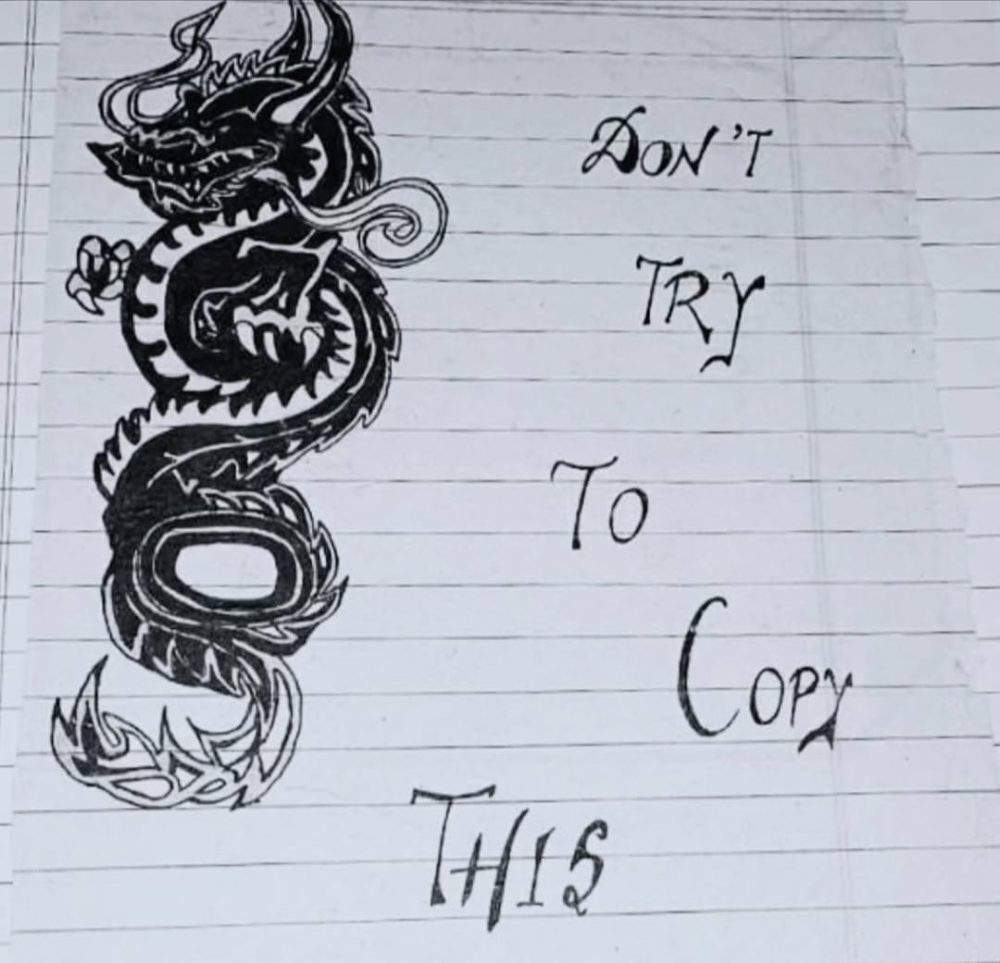

Dragon

Medium: Pen Art
Year: 2021
This Artwork Represents Dragon In A Detailed Pen Art Style,
Dragon Symbolizes Power, Mystery, And Ancient Wisdom Across Many Cultures. With Its Fierce Presence And Majestic
Wings, It Represents Strength, Courage, And Protection. Often Seen As A Guardian Of Hidden Treasures And Sacred
Knowledge, The Dragon Inspires Imagination And Respect, Reminding Us Of The Balance Between Fear And Wonder.